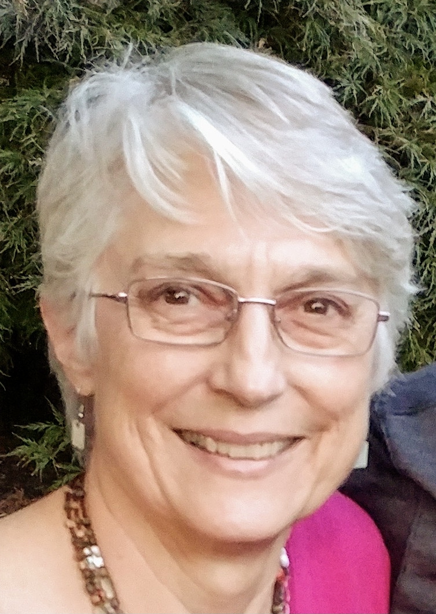
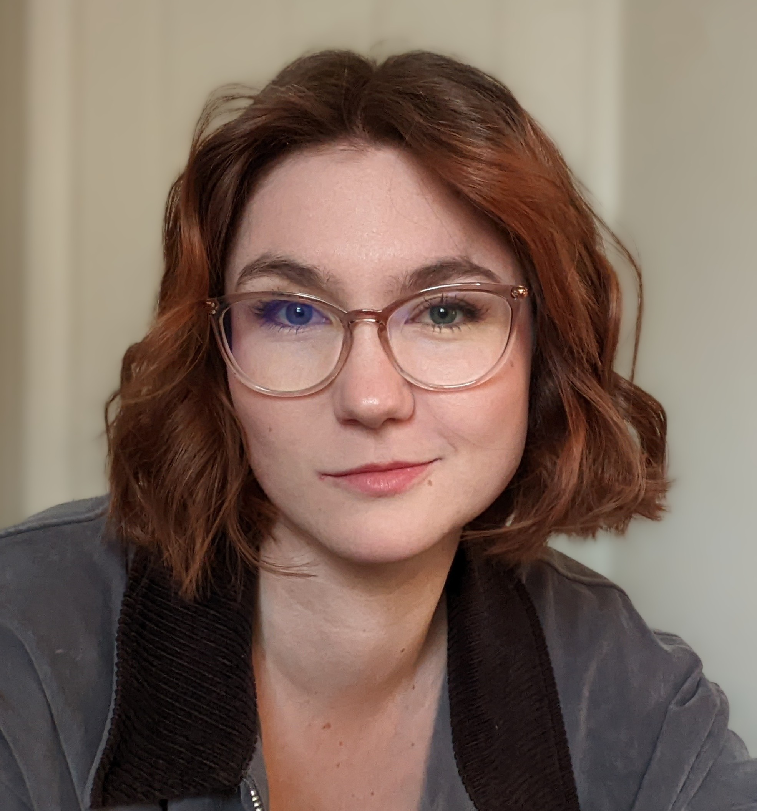

The Gift of the Magi

Zachary Angus () baritone, has been praised for his "spinning instrument," "gleaming smile," and "strong baritone." Based in Philadelphia, Zachary is fast rising in the US opera and concert scene. This marks Zachary's second appearance with DVOC, the first in 2024 as Count Almaviva in Le nozze di Figaro. In the past year, Zachary performed at the Philadelphia Fringe Festival, garnered roles in two world premieres: David Winkler and Luigi Ballerini's Rossini Perduto (Long Island Concert Orchestra) and Daniel Asia's The TIn Angel (Teatro Grattacielo), and had his role debut as Enrico Ashton (Lucia di Lammermoor, Opera Magnifico). In recent years, Zachary has also appeared with Bohème Opera NJ (Morales, Carmen), Opera Festival Chicago, Indianapolis Opera, and Eugene Opera.

Grant Mech () Grant Mech holds degrees from Westminster Choir College in Music Education and Voice Performance and Pedagogy. He has appeared in numerous operatic productions, including Alcina (Melisso), La Clemenza di Tito (Publio), Le Nozze di Figaro (Bartolo), and the title roles in Don Giovanni and Gianni Schicchi. Concert and recital appearances have included works such as Brahms’ Requiem, Mendelssohn’s Elijah, and Schubert’s Schwanengesang. From 2010-2022, Grant was the director of music at Good Shepherd Episcopal Church in New York. He is the choral director at Rancocas Valley Regional High School in Mount Holly, NJ. He has also served on the staffs of the Sem Summer Music Festival in Kingston, PA, the Lawrenceville School, and Saint Peter’s University. Grant’s choirs have toured extensively in the U.S and abroad. He is a member of the Perspective Collective, a group that seeks to promote art song and opera in untraditional formats and venues. www.mechgrant.com

Mark Horwedel (Chorus Recruiter) has recruited the chorus for the past 3 years. He is performing his sixteenth season with DVOC, having done Land of Smiles, Gianni Schicchi, Elixir of Love, La Rondine, Merry Widow, Don Pasquale, Carmen, La Forza, Rigoletto, Aida, and Amahl and the Night Visitors, as well as several concerts with them in previous seasons. He has also performed with Opera Delaware, Center City Opera Company, and Concert Opera of Pennsylvania in repertoire including Romeo and Juliette, Daughter of the Regiment, Dido and Aeneas, and La Sonnambula. Mark’s Broadway-style credits include My Fair Lady, Once Upon a Mattress, South Pacific, Fiddler on the Roof, and Oliver! Mark is also active in Liturgical music, having served as the Bass section lead and a cantor in Saint David’s parish, and as the Tenor/Bass section lead in Joyful Song, a choir that does special event performances for the Archdiocese of Philadelphia..

Connie Koppe (Costume Designer) is pleased to add the new children’s opera Liebovar to the list of operas she has directed for The Delaware Valley Opera Company. Directing seemed to be a natural next step for singer and arts educator, Connie Koppe, who began directing for DVOC in 1997 with a production of The Merry Widow. Connie got her directing training from 14 years of watching professional directors while singing with the Opera Company of Philadelphia chorus and The Pennsylvania Opera Theater. For DVOC she has also directed Carmen, The Barber of Seville, The Marriage of Figaro, The Magic Flute, Cenerentola, Don Giovanni, Il Tabarro and Amahl and the Night Visitors. For several years, she was the Stage Director for the Philadelphia Christmas Revels and she directed a production of The Pirates of Penzance for the Philadelphia Biblical University’s opera workshop and Don Giovanni for Opera Libera. Connie holds a BS in Music Education and a Master of Music in Vocal Performance.

American-Canadian soprano Suzannah Waddington (), praised for her “bright, penetrating soprano,” (Opera News) is a graduate of the Cafritz Young Artist program with Washington National Opera (2020-2022). Highlights of her Kennedy Center residence included Carmen (Frasquita), Written in Stone (The Monument), and Handel’s Messiah with the NSO under Gianandrea Noseda. In February of 2020, she was a Semi-Finalist in the Metropolitan Opera National Council Auditions. She received her bachelors and masters in vocal performance from Houghton College where she studied with Kelley Hijleh and Mitchell Hutchings. Her other opera credits include Isabella Stewart Gardiner in the 20 minute opera American Apollo, written for the American Opera Initiative program with Washington National Opera, Suor Angelica in Puccini’s Suor Angelica with Si Parla! Si Canta in Arona, Italy. She is a native of Philadelphia where she currently resides. Soli Deo Gloria.

Natalie Pica (Assistant Stage Director - Il Barbiere Di Siviglia) is thrilled to be assistant directing and stage managing Cavalleria rusticana and I Pagliacci. Previously, she has held this position for other DVOC productions, like The Tales of Hoffmann and Carmen, and has directed a production of Amahl and the Night Visitors. Some roles with DVOC include Colette (Verecundia), Valencienne (The Merry Widow), Alicia Silberklang (L'impresario), and Giannetta (L'elisir d'amore). She also performs in the chorus of Boheme Opera New Jersey and others.

Ali Rohrbaugh (Production Manager) is a multi-media production manager and performer based in Philadelphia, with a focus on live performance, video marketing, and new work development. Previous credits include: Philly Children’s Theatre’s ‘Braving the River: A Sensory Play’ (Stage Manager), ‘Jump-Spin-Move! A Theatre For the Very Young Show,’ and ‘Season’s Magical Adventure,’ attending the Edinburgh Fringe Festival with The Los Angeles Theatre Initiative’s 2022 ‘Too Much Light…’ (Business & Marketing Director), Fish Project Play Festival and Red Door Play Festival (Festival Coordinator). Upcoming projects: ‘Light Year Away,’ with Philly Children's Theatre in collaboration with the Please Touch Museum, and returning to Edinburgh Fringe 2025 as a Lead Producer with the Los Angeles Theatre Initiative. Education: Muhlenberg College 2022, Theatre and Business Administration majors..

Rebecca Sacks (Stage Director - Le Nozze Di Figaro) is known for her dynamic stage presence, smart musicality, and stylistic versatility. With a voice described as “tuneful” and “dashing,” she has recently been heard as The Witch in Philadelphia Opera on Tap’s production of Hansel and Gretel and Santuzza in Delaware Valley Opera Company’s Cavalleria Rusticana. Past seasons have seen role debuts as Sara in Roberto Devereux with St. John’s in the Village, The Waitress in Speed Dating Tonight with Fargo-Moorhead Opera where she was also scheduled to make her role debut as Mamma Lucia in Cavalleria Rusticana prior to cancellations due to COVID-19, and Fricka in Das Rheingold with the Miami Wagner Institute.
Also an up-and-coming stage director and arts administrator, Ms. Sacks’ 2023-2024 season included designing and directing a new production of Le Nozze di Figaro set in the summer of 1969. She additionally is a co-founder of Art City Opera, Philadelphia’s newest (and grooviest) opera company. Their inaugural season in 2024-2025 will include a recital series as well as a mainstage production featuring the immense talent of Philadelphia artists.
Ms. Sacks holds degrees from Stanford University and the University of Georgia and has received awards from the American Prize in Opera, the Metropolitan Opera National Council Auditions, the Orpheus Competition, Opera Connecticut, and NATSAA. Rebecca currently resides in Philadelphia with her partner and her beloved cat.

Andrew Samlal (Music Director - Le Nozze Di Figaro) is Conductor of the Temple University OWLchestra and Conducting Apprentice with the Philadelphia Ballet. He will also serve as the Music Director for the Delaware Valley Opera Company’s Spring production of Mozart’s Le Nozze di Figaro. He recently graduated from Temple University with a master’s degree in Collaborative Piano with a focus in Operatic Coaching. At Temple, Samlal worked as Assistant Conductor for the Temple Symphony Orchestra, Vice President and Artistic Director of the Temple Repertory Orchestra and Assistant Conductor and Coach with the Temple Opera Theater on Le Nozze Di Figaro, Hansel und Gretel and Nico Muhly’s Dark Sisters (2012). Samlal has been privileged to work with notable conductors and artists including Markand Thakar, Beatrice Affron, Jose Luis Dominguez, Thomas Hong and Lambert Orkis.

Jackie Scheiner (Assistant Stage Director - Le Nozze Di Figaro) received her Bachelor’s of Music and Theatre from Ithaca College. She currently studies voice with Paul Spencer Adkins. Jackie is passionate about all aspects of performing arts, as well as social justice, zoology, and education. Jackie also performs with the Abington Choral Club, and recently made her debut with the Savoy Company of Philadelphia in their 2023 production of The Pirates of Penzance. She would like to thank her partner, her family, Joyce, Connie, Joe, and the cast and crew of Susannah for supporting her on this journey.

Vakhtang Zaalishvili (Music Director - Il Barbiere Di Sivigila) is a pianist and collaborative pianist-opera coach. Vakhtang's achievements extend to his participation in competitions, festivals, and opera productions, earning laureates and diplomas in events such as the Future Star 8th republic competition/festival – laureate and diploma “The Best Performing Skills” (Tbilisi, Georgia, 2015), "Music Without Limits XVI International Competition" – I place in category D (Druskininkai, Lithuania, 2016), 7th International Moritz Moskowski Piano Competition – Laureate Diploma (Kielce, Poland, 2017), 2nd National Melito Balanchivadze Piano Competition – Laureate and III place (Kutaisi, Georgia 2018). The Gradus piano Festival – (Denmark, Aarhus 2018), Notable highlights as an opera coach include the production opera "Falstaff" at Conservatorio di Musica Arrigo Boito in Italy (2022), and productions such as "Le Nozze Di Figaro" (2023) and "Dido and Aeneas" (2023) in Tbilisi, Georgia. He is delighted to make his company debut with DVOC this season.